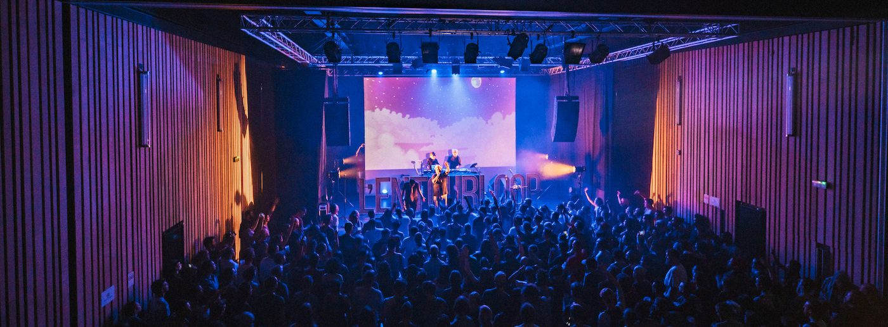

Espace Django Strasbourg, salle de spectacles de musiques actuelles
Musique, cinéma, expositions, jeune public, ateliers, résidences, pépinière, rencontre...
Autant d’initiatives, dans/hors/entre nos murs, qui s’entrechoquent et se renforcent mutuellement pour vous enchanter et s’inviter pleinement dans votre quotidien.

Adresse : 4 Impasse Kiefer, 67100 Strasbourg Neuhof
| En transport en commun |
Tram C - arrêt Rodolphe Reuss (à 5 mètres de l'arrêt) |
| Bus 24 - arrêt Neuhof Rodolphe Reuss |
| Bus 40 depuis le parking relais Elsau vers Neuhof |
| À vélo |
Pistes cyclables à proximité |
| Arceaux à vélo devant la salle |
{% endblock %}